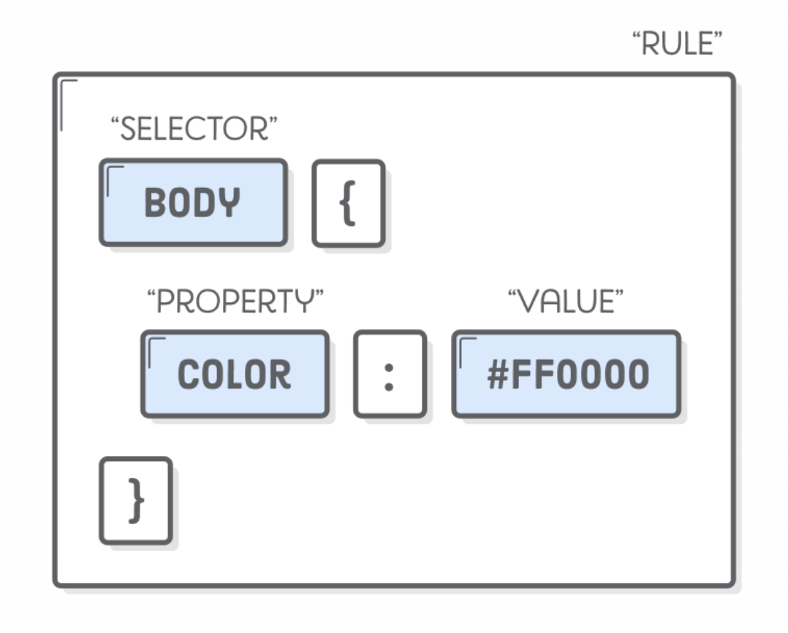

Intro to Web Development
Infrastructure
Technology has come so far that we don't need to understand web infrastructure entirely to get a good sense of what is happening when we use the internet, but it's important to have some context as we learn about how to build on it.
The simple version is that the internet is an interconnected web of machines that can talk to each other. Data is sent from one machine to another. There are many more complicated things happening, of course, but at its core, it's just interconnected machines.
Navigating this interconnected system is just a matter of seeking out "data" and rendering that returned data, which we typically see as websites. (Using "data" here to really just mean a collection of information, rather than a dataset of something like measurements.)
To enter this world of web you go to a browser, like Chrome or Safari. In that browser, you ask for a website by entering its domain name or URL, like https://google.com, and your browser displays the response to you. A more technical way to describe this request-and-response flow is the relationship between clients and servers.
Clients <> Servers
The client/server distinction is primarily about communication patterns and responsibilities rather than different types of hardware. The technical differences emerge from their roles: servers are optimized for serving many clients reliably, while clients are optimized for user interaction and consuming services.
They can be quite complicated, but for our use case in this class, we can simply think about them like this: clients are your browser making requests, and the server is either...
- your local server (computer) rendering local files (
http://127.0.0.1:3000/), or - an external server sending data to you via the web (
https://google.com).
We will use servers to render our code, and clients to view it.
Websites
When we create a website, we are writing a "document" that needs to be available to other machines. We can assume that a website will be read on a web browser, so we need to make it in such a way that it is readable on a browser. This requires a specific file type, and originally, this was just simple HTML.
We can still make those simple HTML files, but then other file types were added, like JavaScript and CSS. HyperText Markup Language (HTML), Cascading Style Sheets (CSS), and JavaScript are the languages that run the web. They’re very closely related, but they’re also designed for very specific tasks.
- HTML is for adding meaning to raw content by marking it up.
- CSS is for formatting that marked up content.
- JavaScript is for making that content and formatting interactive.
Think of HTML as the abstract text and images behind a web page, CSS as the page that actually gets displayed, and JavaScript as the behaviors that can manipulate both HTML and CSS.
HTML
HTML is composed of elements and their tags that give meaning to the content inside of them. Tags can be things like:
- Document structure (
<html>,<head>,<body>, etc) - Text elements (
<h1>,<h2>,<p>) - Links, images, lists (
<a>,<img>,<ul>,<ol>) - Containers, sections (
<div>,<main>,<footer>) - Interactive elements (
<button>,<input>)
For example, creating a button looks like this:
<button onclick="(()=>window.alert('BOO!'))()">submit</button>
and when rendered, it works like this:
CSS
HTML represents the content of your web page, while CSS defines how that content is presented to the user. CSS actually "selects" elements on the page, and styles them as per the instructions in the CSS file. A style rule looks like:
.classname-of-thing {
color: pink;
font-weight: 700;
font-family: monospace;
}
Then, an HTML element with that class will respect the style rules it was provided. This HTML element
<span class="classname-of-thing">PINK THING</span>
...will render as: PINK THING
This syntax in CSS is intuitive, but requires:
- Selector: This is the HTML element name or condition at the start of the ruleset. In this case, the classname of "classname-of-thing", designated by
.classname-of-thing. - Properties: These are ways in which you can style an HTML element (e.g., color, font weight, and font family).
- Property Value: This chooses one out of many possible appearances for a given property, like the designation of "pink" for color.

JavaScript
JavaScript is a scripting or programming language that allows you to implement complex features on web pages — every time a web page does more than just sit there and display static information for you to look at — displaying timely content updates, interactive maps, animated 2D/3D graphics, scrolling video jukeboxes, etc. — you can bet that JavaScript is probably involved.
A very common use of JavaScript is to dynamically modify HTML and CSS to update a user interface, via the Document Object Model API.
In the button we created before with HTML, we added JavaScript by creating a function that interacted with your rendering of the webpage. The HTML is the <button> tag, but the JavaScript is the function set to the onclick property of that button.
- HTML:
<button>submit</button> - JavaScript:
() => window.alert('BOO!')
Combining them creates an HTML button with interactivity:
<button onclick="(()=>window.alert('BOO! AGAIN!'))()">submit</button>
Markdown
The final file format or syntax worth discussing in the context of what we are building together is Markdown. Markdown is a markup language for making formatted text in a plain-text editor. Markdown is simply a syntax, which is respected by some technologies (like Observable and GitHub) to render in a certain way.
There are a few rules to markdown, but some of the simplest examples are:
# Heading
## Sub heading
### Sub sub heading
this would be a [link](https://google.com)
this is a list item:
- one
- two
- three
and code blocks with back ticks `code`
Markdown is typically helpful for things like text files within a GitHub repository, but even more helpful for us, as it is how Observable Framework structures its pages. This page that you are reading right now is written in (extended) markdown in a plain text editor. More on how that works in the next lesson, Intro to Observable Framework.
Version Control (Git, GitHub, and GitHub Pages)
To help software engineers work together on projects, version control is a well-defined practice to organize and track the history of coding files. It acts like a google doc for coding files, where multiple people can access and edit the same files at the same time without loss of work. Although our work for this class is not necessarily code collaborative, we will still leverage Git and GitHub to manage our codebase and share our work with the world.
Git
Git is a version control system that intelligently tracks changes in files. It is particularly useful when you and a group of people are making changes to the same files at the same time. On your local computer, your work is organized into folders where you save your progress through "commits". Git is the system that we use to track code changes, while GitHub is the remote online platform that houses the code.
GitHub
GitHub is a cloud-based platform where you can store, share, and work together with others to write code. It acts as the remote "repository" for your project. We will use that word often -- repository, or "repo" -- to describe the code "folder". There will be a class repository, and you will have a personal repository.
The class repository will include:
- a "template" of all the blank / uncompleted labs that you are assigned (on the
/mainbranch) - a place where I will store any code we do together in class (on a
/classbranch) - a reference for class lessons in written form, just like this one. This lesson is written in markdown, in the class repository, and deployed via GitHub Pages, just like your work will be.
When you create your personal version of the class repository, you will do something called forking. By forking, it allows you to:
- start with a populated repository, that includes all the technical set up for this project
- continue to have connected visibility to the original class repository, and include updates from the original, upstream class repo with a simple command
- have your own playground that does not affect the class repository
- learn and get started with your own code working towards a portfolio
There are way more in-depth details about these steps once you get started in the Lab 0 readme, but in theory, to move your work between your local computer and GitHub, you would do the following:
- Stage: Set some of your saved changes as ready for commit.
- Commit: Commit those changes with a message.
- Push: Sending your local commits up to the GitHub repository.
Your code would then be on GitHub, and subsequently build and push to your deployed site. If there are changes to the class repository, you can pull those to your machine with a git pull.
- Pull: Bringing the latest changes from the GitHub repository down to your local machine.
This flow in action looks something like this:

GitHub Pages
GitHub Pages is an extension of GitHub, and it is a static site hosting service. It takes the files from your repository on GitHub, builds them into something renderable (from .md files to HTML/JS/CSS files), and publishes them as a live website. The service runs your files through a build process and then deploys them, making your work accessible to anyone via a public URL.
This process can be complicated, so the class repository (and, subsequently, your forked repository) is already completely set up with the infrastructure to do this. You shouldn't have to change anything, and your page should build and deploy as soon as you push your code to GitHub. (If you're curious, the job that does this is located in the .github/workflows/deploy.yml file).